Designing Your Dream Home with AI
Describe the home you have always wanted and watch it come to life on the screen — then make it energy‑efficient
The wish to design a home is close to universal. People sketch plans on the backs of envelopes, rearrange rooms in their heads on the drive to work, and hold firm opinions about roof pitch and the color of the siding. A whole genre of design and construction games — such as Minecraft and Welcome to Bloxburg — exists because of it, and children will spend hours building houses in them unprompted. What stops most people going further is not imagination but tooling: to draw a house properly you first have to learn a CAD program, and to find out whether it is an energy‑efficient house you then have to learn a simulation tool.
Build for the joy of it, the way you would in a game.
Then ask the questions no game can answer — and get real numbers, from real weather, at your real location, using real physics.
So home design tends to happen either on paper, where nothing can be tested, or in software that draws beautifully and knows nothing about physics. A drawing has no insulation, no thermal mass, no solar gain through the south windows and no January heating bill; the sun in the picture is decorative. You can make something lovely and learn nothing at all about science and engineering.
Aladdin is built to close that gap with AI. Describe the home you want, in your own words, and it appears in front of you — a real 3D model you can orbit, click and keep changing by talking. And because every wall, window and roof in it carries genuine physical properties, you can then ask what it would cost to heat in January, whether the summer sun bakes the upstairs, how much electricity the roof would make with panels on it, and whether trees on the southwest would help cooling. And it is easier than a design and construction game: in a game you still place every block by hand. Here a sentence does the building — and underneath it all sits a real building‑performance simulator.
What follows is a tour of what you can make: the architectural styles the AI knows, the details that turn a box into a house, the garden around it, the paint on it — and the science that makes all of it more than a game.
From a sentence to a real house
You open the AI Assistant in Aladdin and type. “Build a two‑story farmhouse facing south.” “Make it a Queen Anne with a corner turret.” “Add a north wing and a front porch.” There is no template to pick, no wizard, no separate design mode. The assistant sits in your ordinary editing session and reads the live scene fresh every time you speak, so it knows what is actually there — even after you have dragged things around by hand.
What comes back is not a fixed model dropped into the scene but a genuine, editable structure: a footprint, walls at a sensible story height, a pitched roof, windows in tidy columns and rows along each wall, a front door where you would expect one. It has real stories — an actual second floor, not a tall box with windows painted on — and every number that went into it is still yours to change by asking. “Make the roof steeper.” “The windows on the selected wall are too small.” “Move the whole thing three meters north.”
And a house is only the start of it. The same conversation goes on to dress the building, plant the ground around it and furnish the yard, each request landing against whatever is already standing there:
A whole session reads like this:
- Youbuild me a new england farmhouse with a wing
- AssistantYour farmhouse is up: a two‑story clapboard main block 12 × 8 m under a gable roof, with a lower wing running west off the back so the two ridges meet in a valley. Six‑over‑six sashes in tidy rows, shutters on every one of them — which is half of what a New England front reads as — a columned entry portico on the front door, and a chimney on the main roof.
- Youadd a pergola and grow a grapevine over it
- AssistantA pergola stands off the west side with a table and chairs under it, and a grapevine is trained over the beams — the canopy sized to the frame rather than dropped on top of it. Nothing else in the yard was touched.
- Youdesign a cutting garden with a picket fence
- AssistantA cutting garden is laid inside a new white picket fence: straight harvest ranks of tulips, peonies and roses behind the house, hydrangeas massed along the facades, potting planters at the back wall, with one lawn filling the enclosure and a paved driveway running out to the street. The gate is cut on the front‑door axis and the planting keeps that approach clear.
- Youpaint it barn red
- AssistantRepainted in “Barn Red”: saturated barn‑red body, bone‑white trim, dark walnut shutters, a black door and an iron roof.
- Younow run the energy simulation for the year
- AssistantAnnual simulation done, using a full year of hourly weather for your site. I can break it down by month, show you where the losses are, or try a change — thicker insulation, better glazing, or the shade trees on the southwest — and re‑run it so you can see which one actually pays.
Forty‑five house styles, written down
“Build a Greek Revival” is a tall order, and it is the request people actually make. So the AI carries a library of architectural recipes: forty‑five worked cases, each a real house with real numbers — the plan, the story heights, the roof pitch, the window proportions, the palette, and the one or two details without which the style does not read. A Greek Revival is not a colonial with columns added to it. It is a wide symmetric block under a low temple pitch, giant‑order columns running the full two stories to a pediment that stands above the eave, one white over both floors, paired end chimneys, and tall narrow sashes wearing no shutters, so that nothing on the wall competes with the columns. The recipe spells all of that out, because the outline alone is not the style: get the pitch, the heights and the proportions wrong and what you have is a house gesturing at a Greek Revival rather than one.
The architectural style library
45 stylesAmerican classical
- Colonial
- Georgian
- Federal
- Greek Revival
- Neoclassical
- American Foursquare
- Cape Cod
- Saltbox
- Dutch Colonial
Victorian era
- Victorian (Queen Anne)
- Italianate
- Second Empire
- Gothic Revival
20th-century American
- Craftsman bungalow
- Ranch
- Raised ranch / split-level
- Modern farmhouse
- Barn / barndominium
European
- English cottage
- Tudor Revival
- French Provincial
- Scottish baronial
- Swiss chalet
Warm climates
- Mediterranean / Spanish Revival
- Courtyard hacienda
- Pueblo / adobe
- Florida Cracker
- Key West / Conch
East Asian
- Chinese traditional
- Japanese minka
- Gasshō-zukuri
- Korean hanok
Modern
- Modern flat-roof
- Cantilever house
- Floating box
- A-frame
Plans & forms
- Cross-gable (T / L plan)
- U-plan
- H-plan
- E-plan
- Cruciform (cross plan)
- Octagon house
- Monitor / clerestory
- Terraced row house
- Dome / roundhouse
Here are four of them, built exactly as they are written:
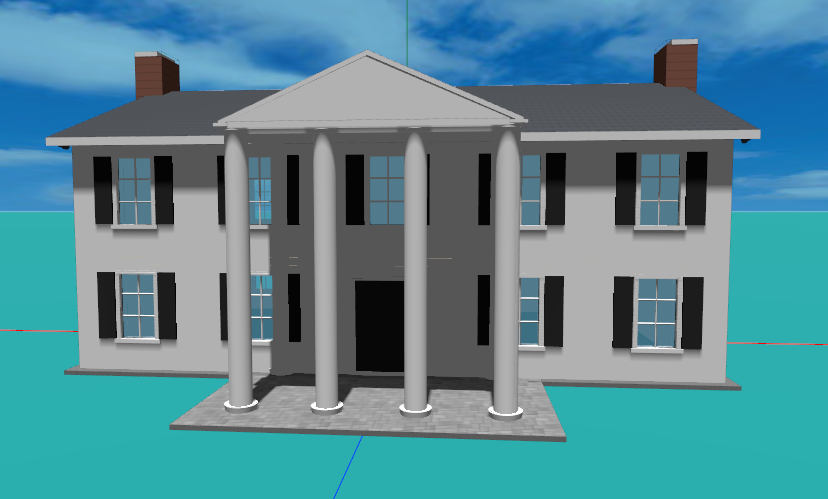
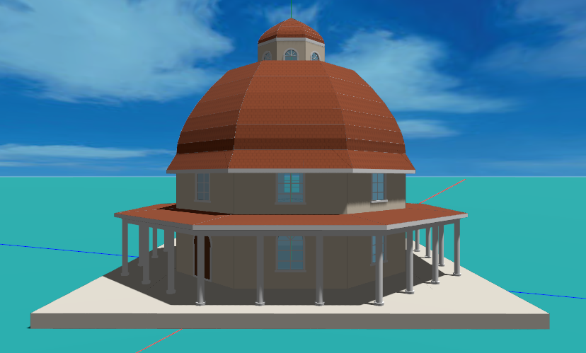
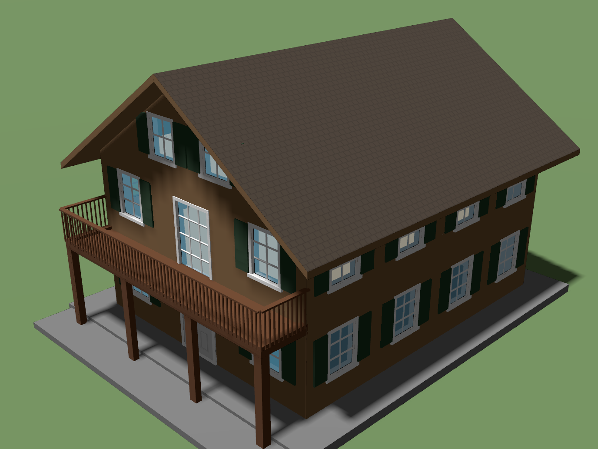
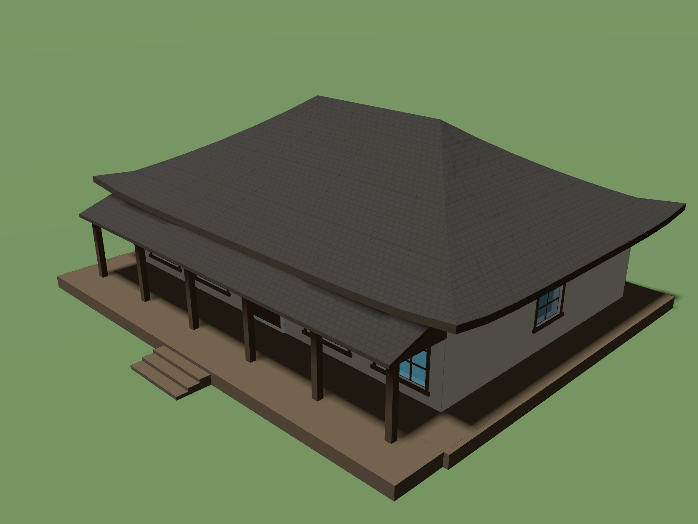
The things that make a house a house
A house gets its character from its parts — the porch, the dormers, the bay window, the chimney — and those parts are exactly where AI‑generated buildings tend to go wrong: a porch hovering above the ground, a dormer cutting straight through the ridge, a turret sitting on top of the front door. So the assistant does not improvise them out of boxes. Each one is a feature the app itself knows how to build, and knows where it belongs: ask for it and it is put on the right wall, at the right floor, fitted around whatever is already there.
- Porches and verandas — including wraparound porches that mitre properly at every corner, with railings, square or round posts, a Victorian spindle frieze, a raised platform and a real stair.
- Dormers — gable, shed and hipped, sized and spaced along a slope, with the roof pitch checked first because a shallow roof cannot carry one.
- Wall dressing — half‑timbering that draws its own posts, beams, studs and braces; parapets; shutters; arched, circular and semicircular windows; glazed and paneled front doors; bargeboards on the gables.
- Chimneys, cupolas, balconies, porticos and bay windows, each landing where it belongs and clearing the windows it would otherwise cover.
- An attached garage, tucked under the house eave at the same pitch, with a driveway that follows.
- Turrets — the octagonal corner tower of a Queen Anne, rising past the eave under a conical spire.
After dark a lighting plan takes over: carriage‑lantern sconces beside every entry door, bollards pacing the walk, lamp posts at the street, lanterns at the gates, uplights in the trees and a glow at the pond, in four fixture styles.
The gingerbread on the gable
One piece of that wall dressing is worth singling out, because it shows how far down into the detail Aladdin is willing to go — and because it is the difference between a Gothic Revival and a shed with a steep roof. The bargeboard is the sawn board that hangs on the rake of a gable where the roof oversails the wall. It is the Carpenter Gothic signature, the chalet's verge, the Queen Anne's frill. Aladdin cuts ten patterns, most of them with a finial at the peak. Most are sawn, where the pattern is the lower edge of the board; a few are cut clean through the field between a top and a bottom rail, so the gable itself shows between the pieces — a far bigger change to a house than any edge treatment.
Ask for it on every wall and let the runtime sort it out: a board is drawn only where a wall top actually climbs, so eave walls get nothing and a hipped or pyramid roof gets nothing at all. Here are nine of them on the same plain house:
One boundary worth naming: this is the house, not the rooms. Interior design — room layouts, furniture, finishes — is not something Aladdin does yet, because its subject is the science and the engineering: the envelope, what the sun does to it, and what it costs to keep warm. You can step inside and look around, but what the assistant shapes for you is the building, not the decor.
Then landscape it
A house does not stop at its walls. Ask to landscape the yard and one request lays a complete garden around the building already standing there: beds hugging every facade, drifts of flowers, shade trees, a clipped hedge, a pond held in stone, a lawn, a paved driveway out of the garage, and lamps that come on after dark.
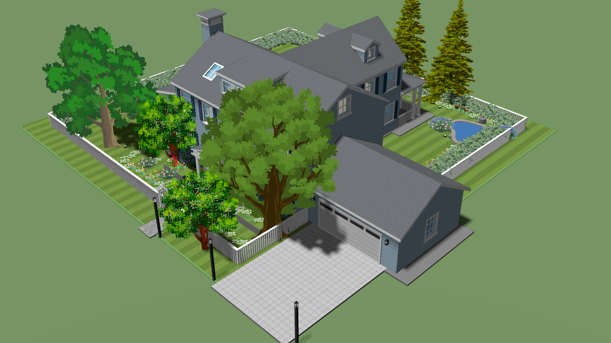
The layout is computed against the real geometry of the house, and most of the work is in the constraints that keep it looking deliberate. Beds follow the actual wall segments, so on an L‑plan or a house with a wing the planting turns the corners with the building instead of cutting through it, and every bed stops at a doorway. Each door keeps a clear corridor out to the edge of the yard — the axis a gate or a rose arbor stands on. Ponds are dug with irregular outlines and edged in stone. Boulders are extruded from fractal footprints to look natural.
There are nineteen landscape styles, and they differ in geometry and ground surface, not merely in flower color:
The landscape library
19 stylesFlower gardens
- Cottage Garden
- Rose Garden
- Cutting Garden
- Pollinator Meadow
- Prairie Meadow
Formal & architectural
- Formal Parterre
- Mediterranean Courtyard
- Classic Front Lawn
East Asian
- Japanese Garden
- Zen Dry Garden
Dry & warm climates
- Desert Garden (xeriscape)
- Coastal Garden
- Hawaiian Lava Garden
- Tropical Resort Garden
Woodland & working
- Woodland Garden
- Alpine Rock Garden
- Rain Garden
- Orchard & Kitchen Garden
Performance
- Energy-Saver Garden
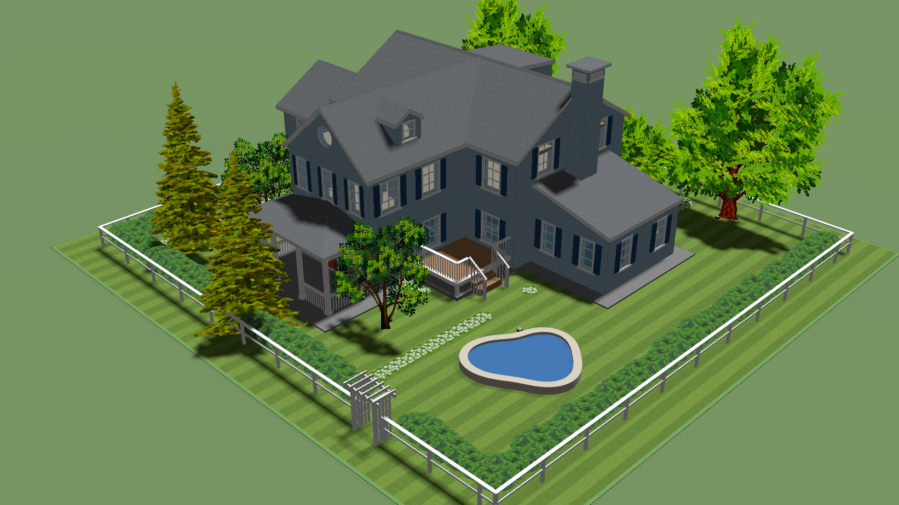
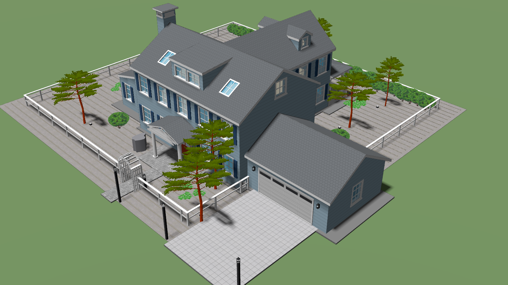
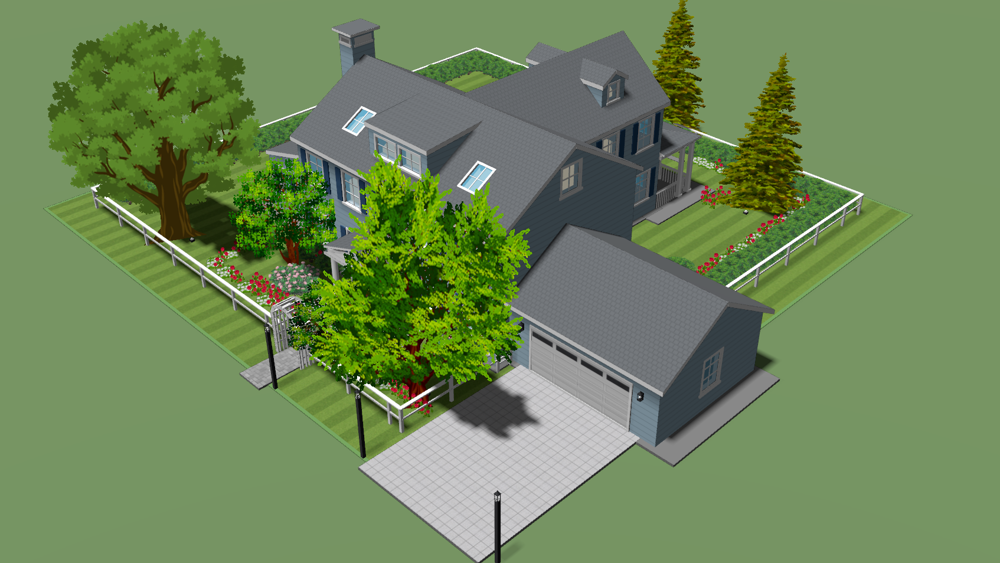
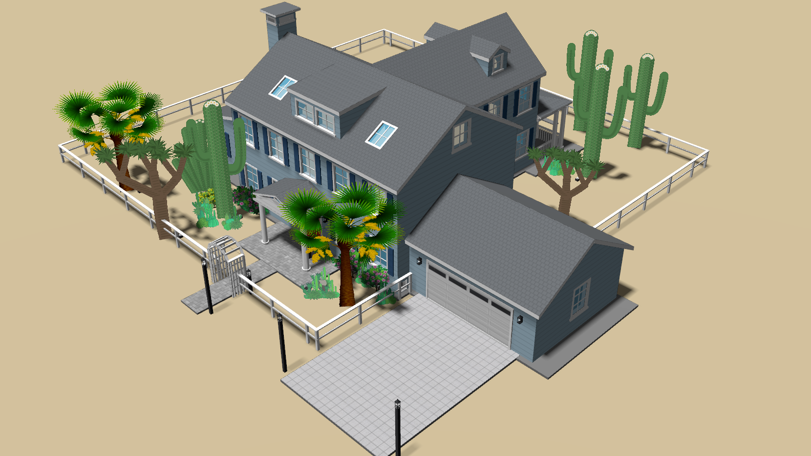
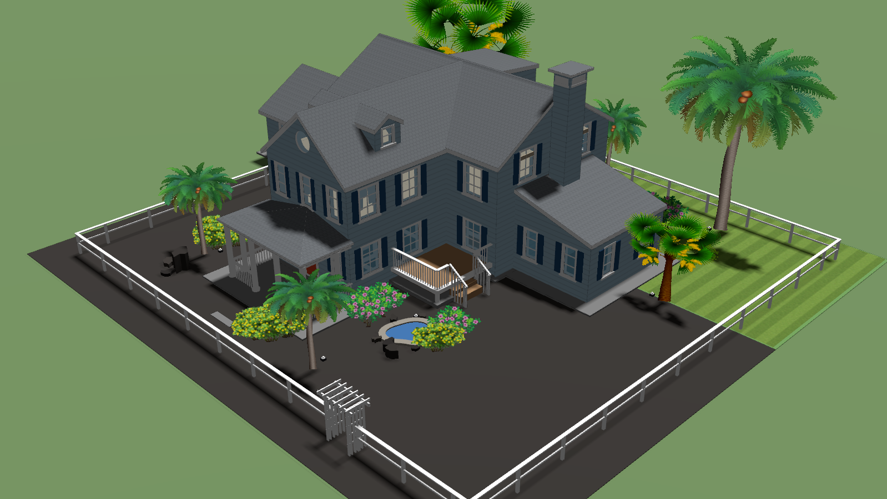
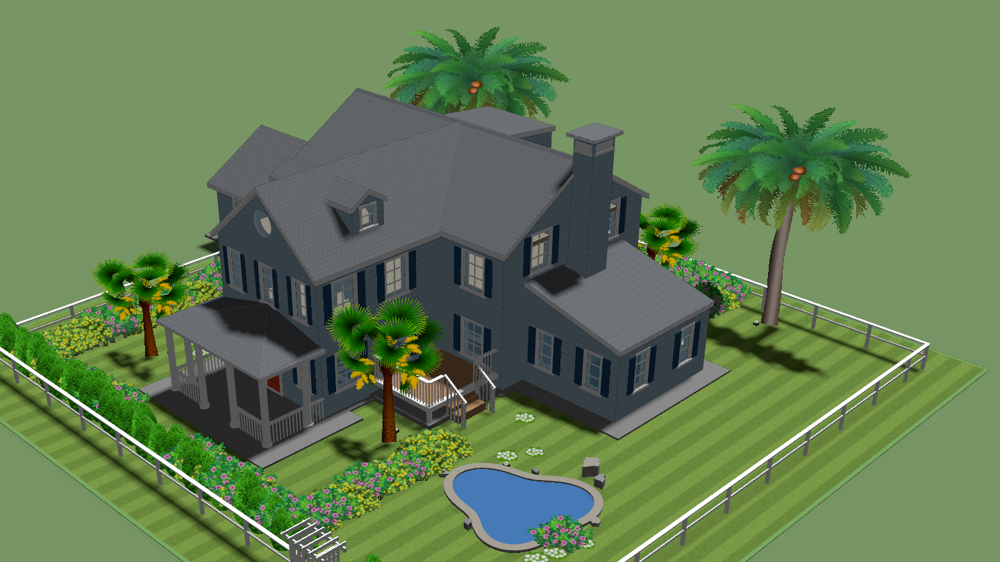
Some styles change the ground itself. The Zen court is raked gravel; the Coastal garden lays a pale pebble‑sand surface over the whole lot; and the Hawaiian garden changes surface across the lot, lawn giving way to lava behind the house.
One thing at a time
Every piece of a landscape can also be asked for on its own, and each one stands alone: “add a pond” digs the water, its coping and its rim rocks and touches nothing else, on a fully planted yard or a bare one. The same goes for the lawn, the hedge, the shade‑tree belt, the walkway and the driveway.
Beyond the planting there is a set of built additions. None of them ever appears unless you ask for it — no style lays one on its own:
- Swimming poolA real basin: water, a coping ring and a paved apron, each paintable on its own — straight‑sided rectangular, or the classic freeform kidney with its dent turned toward the house.
- PergolaThree carpentries: the chunky timber original, a modern louvered one in charcoal aluminum, and an estate version on round white columns — with grape vines trained up opposite posts if you want them.
- GazeboFive structures: the octagonal original on its raised deck, a square pavilion, a two‑tier pagoda, a classical stone rotunda, and a flat‑roofed modern ramada.
- FountainTiered stone — basin ring, pedestal, upper bowl — with a translucent jet, because still water is a birdbath.
- BenchesClassic, slatted park, backless, stone slab or picnic table. They seat themselves at the pond's edge, facing the water — or under the pergola, in pairs facing each other.
- Patio setFour families: the round table with its ring of chairs, a rectangular dining set, a bar‑height bistro, a lounge around a coffee table — an umbrella and a lounger go with any of them.
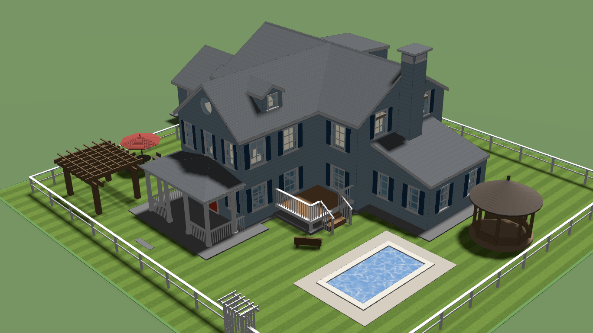
Placement has a small, strict grammar. Name an absolute spot — “in the northeast corner” — and it is resolved against the house's real orientation. Ask for a relative move — “three meters west” — and it is locked to that bearing: the thing lands as close to the distance you asked for as clearances allow along that line, and declines rather than quietly putting itself somewhere else. Things can also be placed relative to each other: a bench west of the pond goes on the pond's west shore, patio furniture by the pool pulls up next to the water, and a bench under the pergola goes deliberately inside it. Up to five of each per house. And revising one — “make the fountain smaller” — rebuilds it exactly where it stands.
And when no words quite name the spot, point. Drop a guide pin anywhere in the scene and say “put the gazebo here,” and here is exactly where it goes. Or drag out a guide region — a rectangle on the ground — and the verb decides what happens inside it: fit the pool to the box, tile it with flower beds, scatter trees across it. The region drapes itself over the terrain, so “in here” works on a hillside too.
The driveway gets its occupant as well: “park a car” stands an electric pickup, sedan or SUV on it — clean low‑poly bodies at real‑world dimensions, the pickup in its unmistakable angular stainless steel, the others in any paint you name. Cars are decoration and know their place: they never shade a solar simulation and never wear a heatmap.
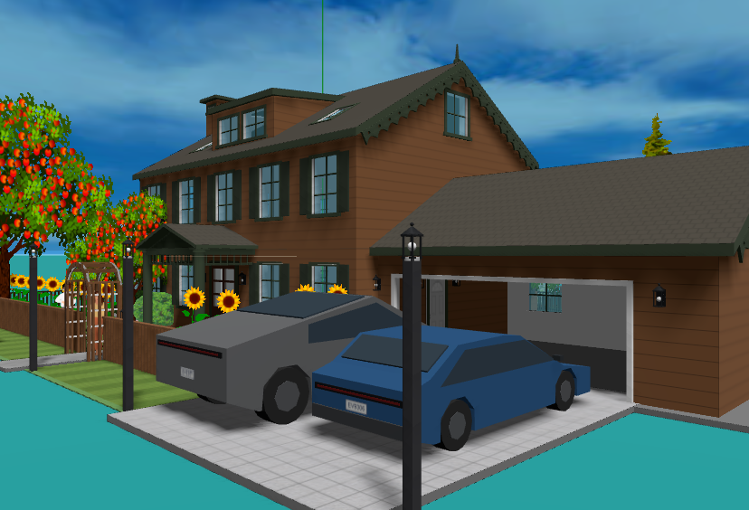
Draw the boundary
A yard has an edge, and the edge says as much about a house as the roof does — a split rail says farm, wrought iron says town, a wall of boards says leave me alone. Nine constructions are modeled, each with its own default height and color, and each is a real ring rather than a decal: posts, boards, rails and piers, mitred at the corners, with the gate cut where the walk actually crosses the line and an arbor standing over it if you want one. Here they are on one house, so the only thing changing between pictures is the fence.
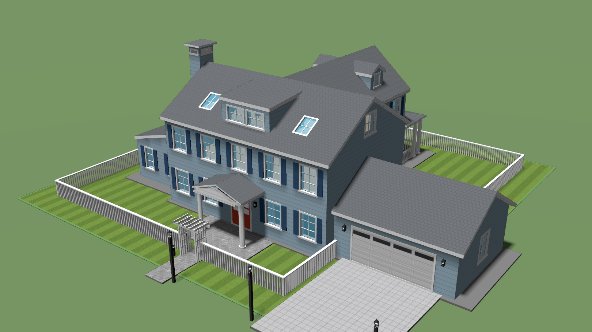
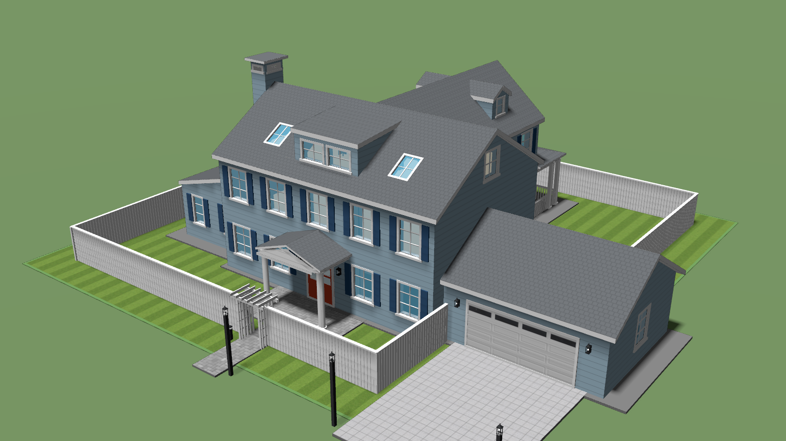
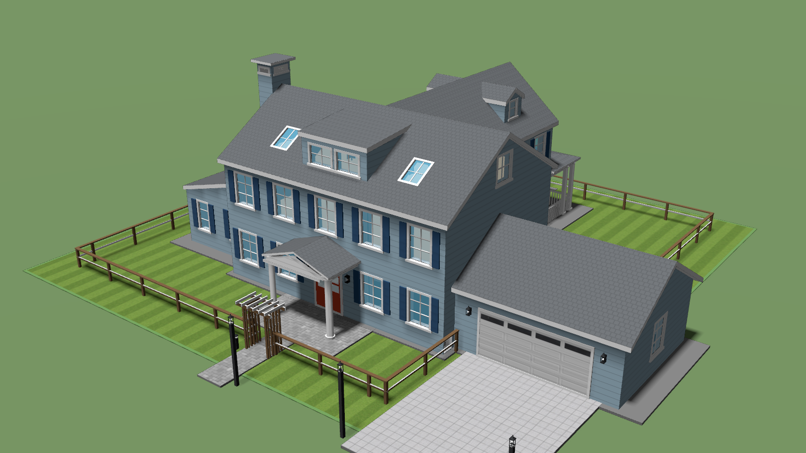
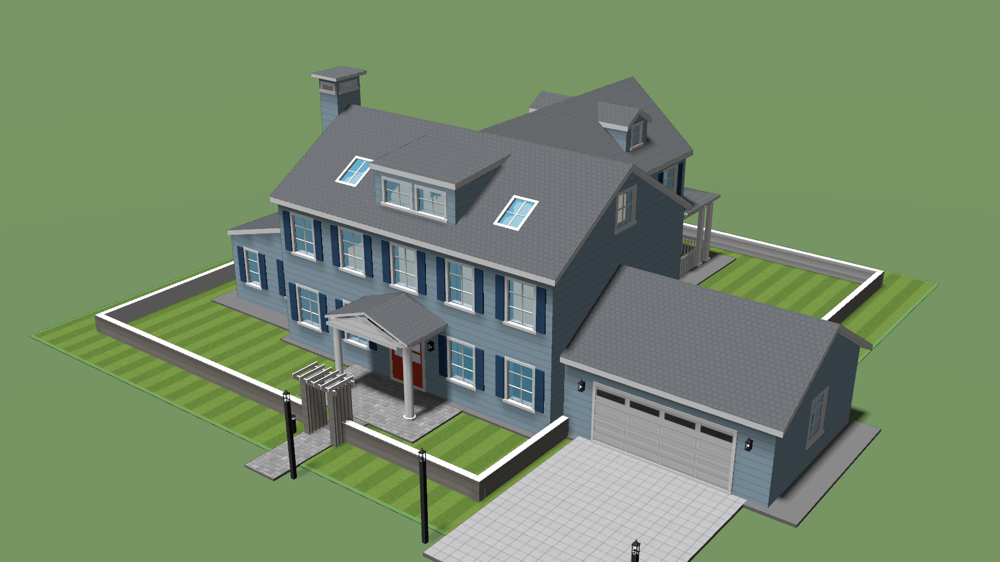
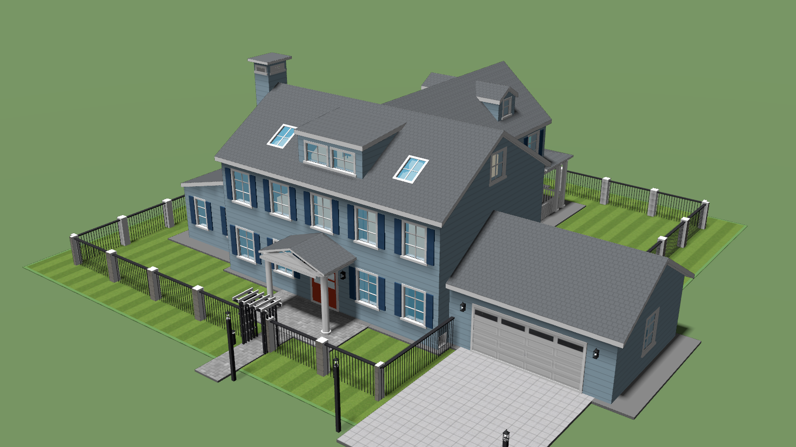
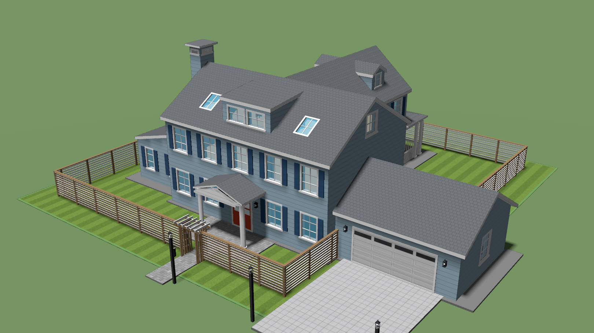
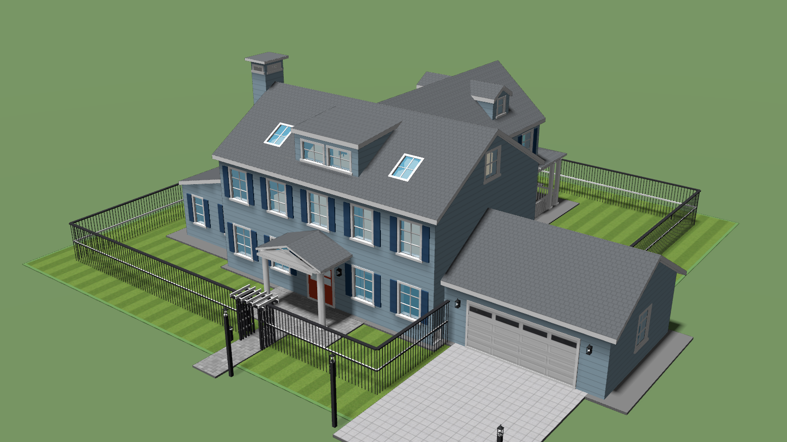
Two things about the boundary fence are worth knowing. Each garden style has a fence paired to it by default — a cottage garden asks for picket, a formal parterre for wrought iron, a Mediterranean courtyard for the low wall — so asking for a landscape with a fence gets a boundary that belongs to it. And it is built as four independent runs, one per side: “move the north fence two meters north” moves that run and leaves the other three where they are, resizing the enclosure, and the lawn refills to the new line in the same breath.
And paint it
The last decision is the one everybody has an opinion about. A color scheme repaints the whole house coherently in one step: walls take the body color, trim and posts the trim color, windows their trim and shutters, the entry door its accent — keeping its paneling, which tints rather than flattens — and the roof its own color. Six of the twenty, on the same house:
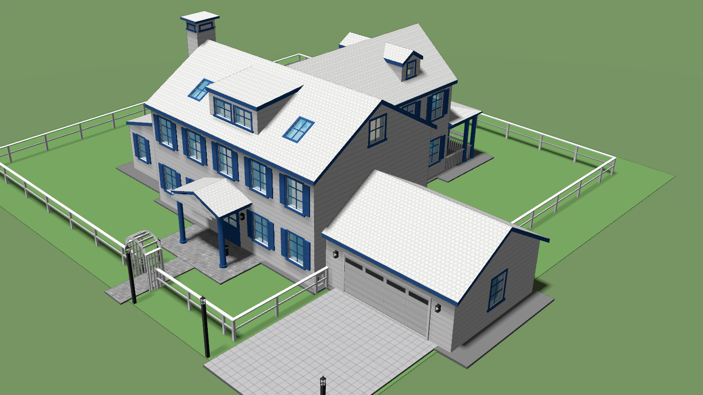
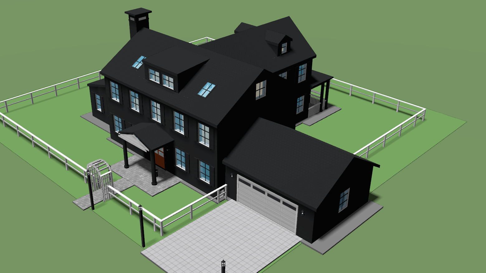
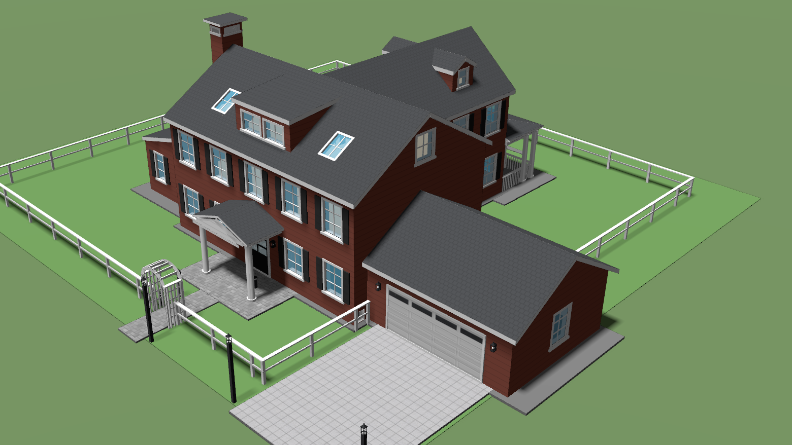
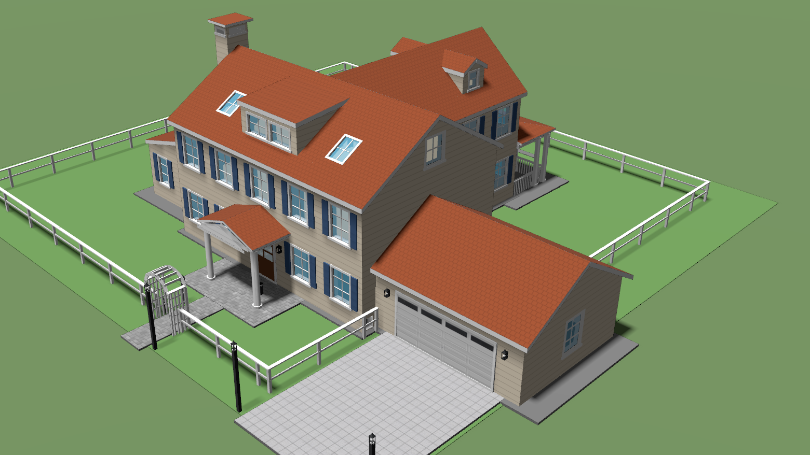
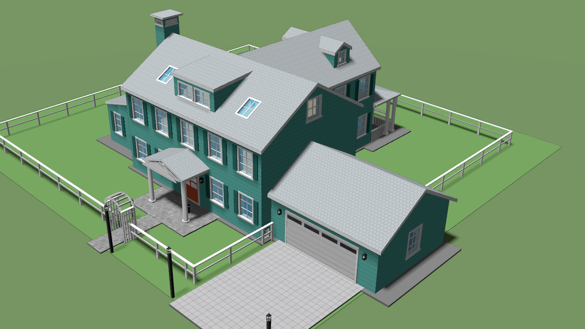
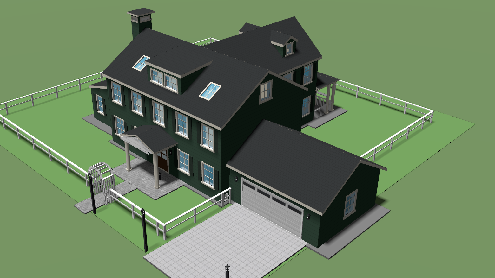
The color schemes
20 palettesNow find out how it performs
Everything above would be a pleasant toy if it stopped there. It does not, and that is the point of building a home here: what you have just made is an engineering model. The walls have U‑values. The windows have solar heat gain coefficients. The sun moves correctly for your latitude, on the date and at the hour you set, and the weather comes from real measured data for your location.
So you can ask, in the same chat window that built the house:
-
How much energy will this house use?
It drives the building‑energy engine through a full year of hourly weather and reports the heating, the cooling and the net, month by month — then tells you what the numbers mean.
-
Does the upstairs overheat in July?
The indoor temperature across a day, so you can see whether a room bakes in the afternoon or holds comfortable overnight.
-
Put solar panels on the south roof and tell me the annual yield.
With tilt, orientation, cell‑temperature derating and battery storage, so the net figure counts what the house generates for itself.
-
Show me where sunlight actually hits.
A solar‑radiation heatmap painted straight onto the roofs and the walls.
-
Would trees help?
Here the garden stops being decoration. Trees are real occluders in the simulations — which is why the landscaper puts deciduous shade trees on the true sun side, where they block the summer sun and, bare in winter, let the low winter sun through, with evergreens opposite as a windbreak. One landscape style, the Energy‑Saver Garden, exists purely so you can run the year before and after and watch the number move.
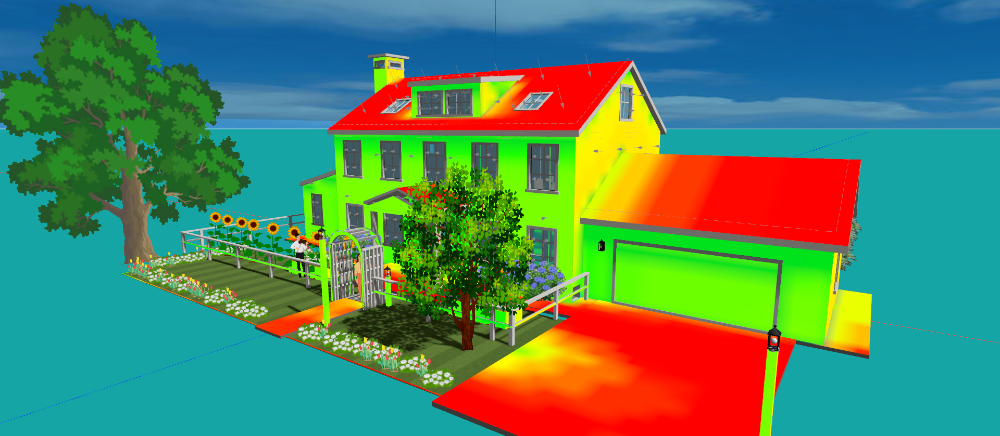
Or let AI optimize the house for you
Answering questions is one thing. The more interesting move is to hand the whole problem over: “optimize this house.” The assistant then stops being a draftsman and becomes an engineer. It simulates the design you have, changes one thing to cut net energy — heating plus cooling, minus whatever the rooftop solar panels generate, if any — simulates again, and keeps the change only if it actually helped. If it did not, the change is rolled back and the next round has to try a different lever. It repeats for as many steps as you allow, and leaves your scene at the single best design it found.
How a design sweep runs
What makes this different from an ordinary optimizer is what proposes the changes. There is no list of parameters to sweep and no numeric solver hunting through them: the thing suggesting the next move is the language model, reasoning about this house in this climate — that the west glazing is what bakes the upstairs, that the overhang is too short to shade a south window in July. The loop supplies the discipline, the measurement and the veto; the model supplies the ideas. You get back the trajectory, step by step, with what changed and how much net energy fell.
Two ways to search a design space
An evolutionary algorithm
Genetic algorithms and particle swarms — what Aladdin itself uses to lay out a solar farm.- A fixed list of numbersChosen in advance and bounded: tilt angle, row spacing, rows per rack.
- Blind movesRandom resets and recombination. The operator has no idea what a wall is.
- Paid for in volumeWhich is why it needs a population and thousands of cheap evaluations.
The design sweep
The assistant refining a house you have already built.- No parameter listA move is any edit it could make by hand: glazing, insulation, an overhang, the orientation, panels on the roof.
- Reasoned movesThe model reads this house in this climate and picks the lever it expects to pay.
- Paid for in judgmentSo a dozen simulations are enough — and each step comes back explained.
One searches widely because it cannot think; the other searches narrowly because it can. Both are implemented in Aladdin, and they are good at different jobs: the genetic algorithm where the variables are known and an evaluation is cheap, the sweep where the hard part is knowing which variable to touch.
There is a wider version of the same idea. Rather than refining one house, ask for several: the assistant generates a handful of genuinely different candidates for one brief, stands them side by side in your scene, scores them all in a single yearly run, and tells you which won — leaving the row up so you can see for yourself what a deeper plan or a different roof was worth. Then you can point the optimizer at the winner.
And these are not decorative numbers. Aladdin's building‑energy engine is checked against ASHRAE Standard 140 (BESTEST), the reference suite that whole‑building simulation programs are validated with — the same bar professional tools are held to. That is the difference between a house you built and a house you know something about.
Why this matters for young builders
There is a real educational opportunity hiding in all of this. Children who would never open a CAD program will happily spend hours on a house in a design and construction game, and what they are exercising is genuine design thinking: proportion, symmetry, circulation, taste. What has been missing is the feedback loop that turns that play into understanding. In a game, a wall of glass facing north costs nothing. Here you can build it, run the year, and watch the heating bill answer you.
That loop — build something you care about, change one thing, re‑run, hear why the result moved — is how physical intuition is actually formed. And because the assistant explains as it works, a student can ask why the north rooms run cold, or whether insulation or better windows would help more, and get the reasoning rather than a chart. The house they wanted to build anyway becomes the laboratory.
Conclusion
Wherever building has been made easy, people have done an enormous amount of it — for years, unprompted, with no reward but the building itself. The desire is not the scarce part. The interface is.
Aladdin removes the same friction — say what you want, watch it appear — and points it at a model that is scientifically real. The shade trees go southwest because that is where the summer sun is. The heating number comes from a full year of your location's weather, through an engine checked against the standard the profession uses. You get the home you dreamed of, and you get to find out how much energy it will cost you.
Which is, in the end, the promise the name was chosen for. In the old tale, the lamp granted whatever its owner asked for. Ask for your dream home now, and it takes shape in front of you — and then, unlike in the story, you can use it as an engineering laboratory to learn.
Related reading: A new way of design · Validating against ASHRAE Standard 140
← Back to Aladdin